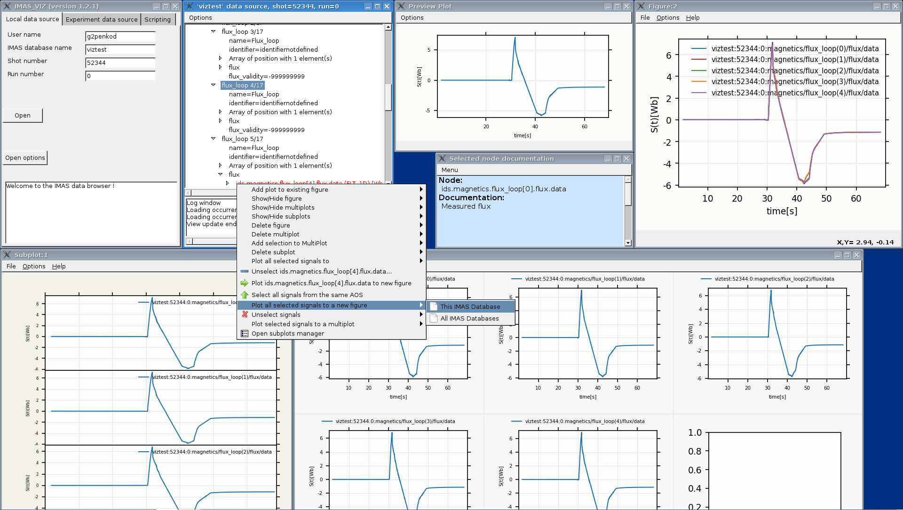
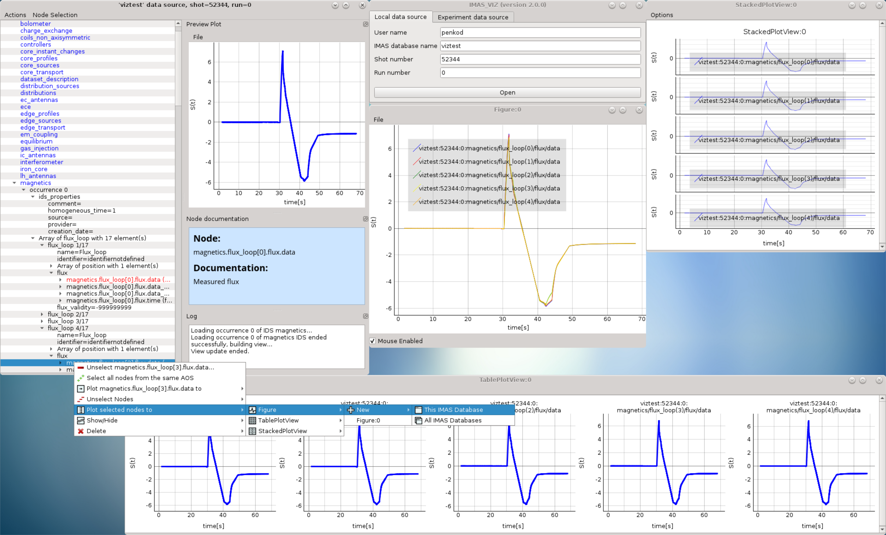

1.2. Release notes¶
1.2.1. Version 2.3.6¶
Code refactoring: renaming functions and other improvements
Tofu plugin: fixing import
Adding MDI feature for windows management
Adding comments to VIZ_API
Prevent to overlap data with different time vectors when using the time slider
Prevent to overlap data with different coordinates when using the coord. slider
Bugs fixes
1.2.2. Version 2.3.5¶
Fixing issue when mixing 0D and 1D data on stacked plots
Automatically adding sliders for plots of multiple data selection
Fixing bug which modifies user selection order
Improving time/coordinate1 sliders labels
Adding occurrence in labels when occurrence > 0
Fixing bug when applying selection with occurrence > 0
1.2.3. Version 2.3.4¶
Not released
Converting exception to warning when 0D data under dynamic AOS are plotted along a coordinate1 dimension
Setting warning message in red in the log output
Removing old code in comments
1.2.4. Version 2.3.3¶
Released on GW as RC version (08.11.2019)
Adding logic for plotting 1D and 0D data as function of time or coordinate1D
Adding support to DD3.25.0
Fixing bugs related to overlapped plots with available slider on time or coordinate1
Removing unwanted print command to console output
Fixing minor issue when checking if data plots are compatibles
1.2.5. Version 2.3.2¶
Released: To be released
Changes:
Improvement of plugins interface making plugins integration much easier
Code refactoring
Still improvement on nodes colours management according to their state and their types
Check that a shot view is opened only once
Menu added in menu bar of shots views for plots windows management
The list of plugins can be now displayed from right-click menu (more convenient)
Reducing font size of documentation widget to display more text
Adding log widget on the main panel - The logging mechanism is the same that shots views, uses the same logging handler (singleton)
1.2.6. Version 2.3.1¶
Released: To be released
Changes:
Equilibrium plugin displays prints now requirements in the log
Equilibrium plugin raises an error if requirements are not satisfied
Fixing IMASViz menu items of shot views management when using UDA
Check prerequisites for using UDA
UDA: removing MAST from available remote machines
Available UDA remote servers can now be configured from a configuration file
User preferences available now for colors of nodes containing data and for data selection
Fixing bug preventing time arrays to be previewed or plotted
Code refactoring around IMAS path handling
Update of the README file
1.2.7. Version 2.3.0¶
Released: 18.10.2019
Changes:
IMAS-2640: Introduced IMASViz variant of Matplotlib exporter (overwrite the faulty pyqtgraph default Matplotlib exporter).
Add Makefile for generating the IDSDef_Parser.py files instead of keeping them in the project GIT repository.
Improve logging messages.
IMAS-2629: Enabled creating plots for 0D signals.
IMAS-2651: Improvement of the time required to build the tree view.
IMAS-2641: Added display of size for 2D signals.
IMAS-2630: Fixed wrong units.
Plot Configuration UI improvements:
Overall UI improvement
Replaced plot line number (marked with #) with colored plot marker.
1.2.8. Version 2.2.5¶
Released: 3.9.2019
Changes:
Add support for IMAS versions 3.24.0
Patches for the generation of IDSDef_XMLParser.py files.
Documentation Widget fix related to ‘Contents’ component.
Optimization of the display of the node/signal contents in the Documentation Widget.
Fixed bug when clicking twice on the root node resulted in a crash
Additional checks while plotting added (disabled mixing plots of quantities with different units).
Added a new command for displaying current selection as IMAS paths.
Added time unit label for the time slider value in plots as a function of coordinate1.
1.2.10. Version 2.2.3¶
Released: 30.7.2019
Changes:
Improve customization of legend labels in the plot configuration UI.
IMAS-2475: Fixed display of multi-line strings (e.g. ids_properties.comment).
1.2.11. Version 2.2.2¶
Released: 5.7.2019
Changes:
Add support for IMAS versions 3.23.3
Improved data handling and checks for the signal paths and occurrences.
1.2.12. Versions 2.1.0 - 2.2.1¶
Released: 2.7.2019
Changes:
Add support for IMAS versions 3.22.0, 3.23.1, 3.23.2
Improvements for the features: - Export IDS, - 1D plotting, - UDA, - plot legend labels (in case when using UDA)
Introduce development of standalone UI plugins (using QtDesigner) in a way that they can be also embedded within IMASViz (HowTo documentation included)
Addition of SOLPS plugin (suitable for reading Edge Profiles IDSs written by SOLPS-ITER)
Patch for handling Core Profiles IDS profiled_1d array
Work done tickets:
IMAS-2387: Changed string on IMASviz display from ‘IMAS database name’ to ‘TOKAMAK’.
IMAS-2404: Highlight/Enable only populated IDSs in the IMAS tree.
1.2.13. Version 2.0.0¶
Released: 4.2.2019
Changes:
Full GUI migration from wxPython and wxmPlot to PyQt and pyqtgraph Python libraries (including Equilibrium overview plugin)
Basic plot feature performance improved greatly. Quick comparison for plotting 17 plots to a single panel using default plotting options: - wxPython IMASViz: ~13s - PyQt5 IMASViz: less than 1s (more than 13x speed improvement!)
Improved tree view build performance (wxPython IMASViz was practically unable to build tree view for arrays containing 1500+ time slices)
Superior plot export possibilities
GUI improvements
Database tree browser interface display improvements
Added first ‘node contents display’ feature (displayed in the Node Documentation Widget)
Reduced the number of separate windows, introduce docked widgets
Introduce first GUI icons
MultiPlot feature relabeled to TablePlotView
SubPlot feature relabeled to StackedPlotView
Add support for IMAS versions 3.19.0, 3.20.0, 3.21.0 and 3.21.1
Included documentation + manual (~60 pages in PDF) in a form of reStructuredText source files for document generation (single source can be generated into multiple formats e.g. PDF, HMTL…)
In-code documentation greatly improved and extended
and more…
Short summary of files and line changes count (ignoring generated files and scripts):
193 commits,
268 files changed,
13316 insertions(+),
10162 deletions(-)
Note
The migration to PyQt5 due to IMASViz containing a large code sets is not
yet fully complete.
List of known features yet to migrate to IMASViz 2.0:
Add selected nodes to existing TablePlotView, and
StackedPlotView manager.
A quick GUI comparison between the previous and the new IMASViz GUI is shown below.
Overview of IMASViz 1.2 GUI:
{kind=link}
Overview of IMASViz 2.0 GUI:
{kind=link}
1.2.14. Version 1.2¶
Released: 24.8.2018
Changes:
New functionality: selection command of nodes belonging to same parent AOS (Array of Structures)
MultiPlot and SubPlot design improvements
Adding support for IMAS versions 3.19.0
1.2.15. Version 1.1¶
Released: 8.6.2018
Changes (since March 2017):
Bugs fixes & performance improvement
Code migration to Python3
GUI improvements
UDA support for visualizing remote shots data
Reuse of plots layout (multiplots customization can be saved as a script file to be applied for any shot)
A first plugins mechanism has been developed which allows developers to integrate their plugins to IMASViz
The ‘Equilibrium overview plugin’ developed by Morales Jorge has been integrated into IMASViz
Concerning UDA, WEST shots can be accessed if a SSH tunnel can be established to the remote WEST UDA server.
Introducing MultiPlot and SubPlot features
Add support for IMAS version 3.18.0